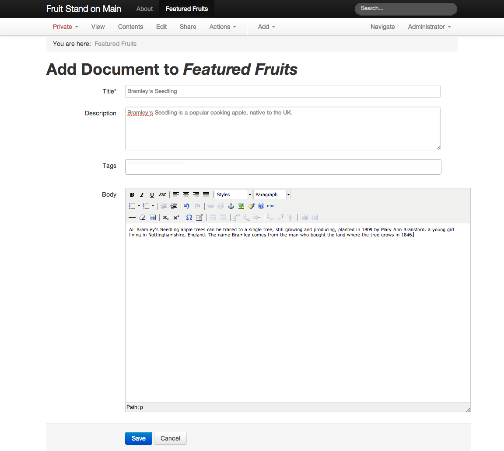
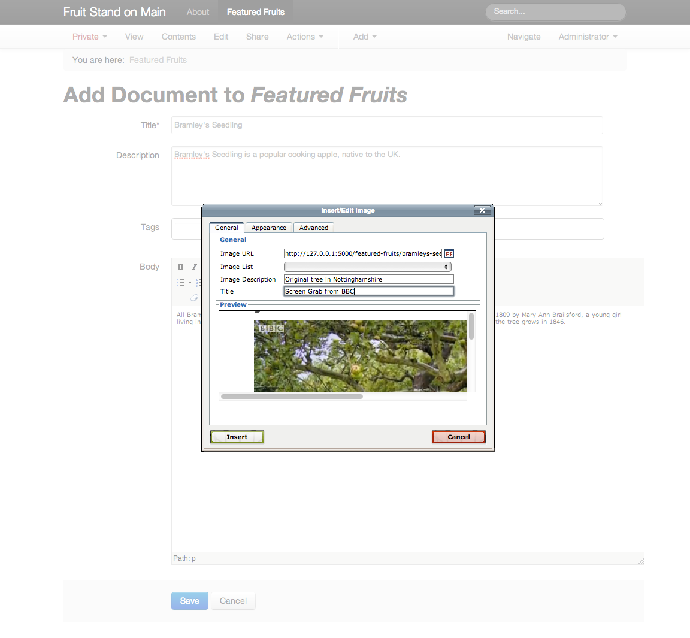
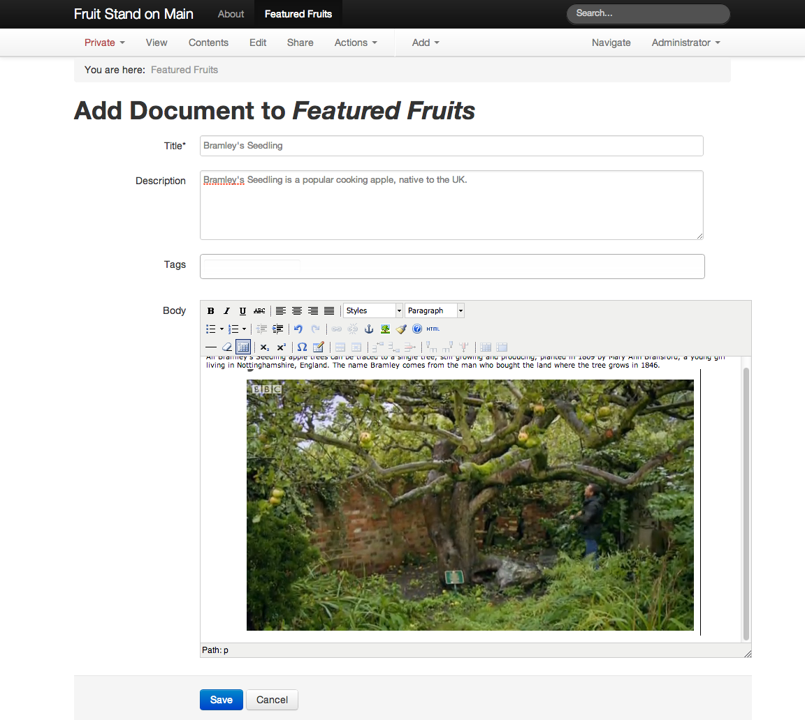
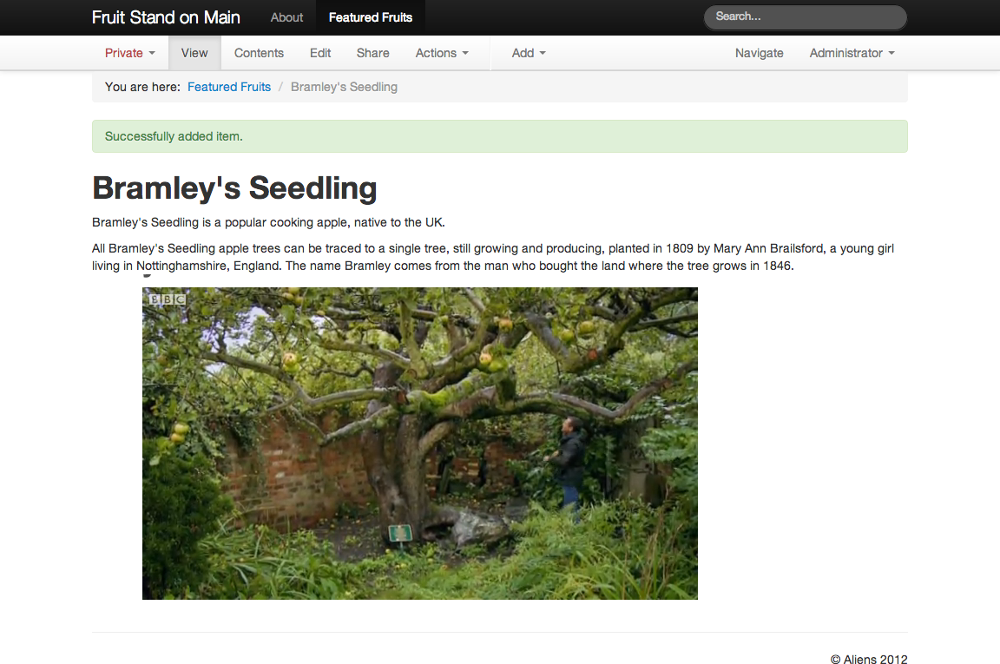

There are two ways to add images to a Kotti website:
Note
Regardless of how an image is added, it will be stored at the position of the document to which (method 1) or at which (method 2) it was added. And you can always see this structure in the “Navigate” display, with images shown indented within the documents with which they are associated. There is also a way to use method 2 to make a document show its contents as a list.
Most often you will want to add images to the body of documents where they are needed, as you would add images to a word processor document (method 1). However, the flexibility for adding images as discrete items by position allows creativity.
We will demonstrate both approaches in this user manual:
When you are adding or editing a document, you have the word-processor-like panel of icons to change the styling of text, to format paragraphs, add links, etc. One of these icons is the image icon, the one that features a tree. To add an image at some place in text you have types in the body, click or move the cursor to the spot where you want it. Usually this is at the beginning or end of a paragraph, or on a line by itself. Then click the image icon to show the image editing popup window to either paste the URL of the image, if it is available on some website, or to browse your computer for an image to upload. There are text entry fields for adding title and a description (sometimes called “alt” text for an image).
Let’s add the image of the Bramley’s Seedling tree, planted in 1809, to a document about the tree. Here you see where we are adding a document called “Bramley’s Seedling” to “Featured Fruits”, which had already been added. We have typed text describing the history of the tree, and are now ready to add the image.
At this point, after entering the body text, the cursor is at the end of the text. We now click the image icon, which shows the image editing window, into which we enter the title and description of the image, and we browse to find the image file on our computer:
After clicking the “Insert” button, we see the image as it appears within the body text:
To finish, we save the “Bramley’s Seedling” document:
There is more to the Image content type. Images can be made from photographs, from scanned documents, from frame grabs of video, from screen captures, from the output of specialized programs – so many ways. But they mostly fall into a set of familar types, with filename endings like .jpg, .png, and .gif. They vary in size tremendously, from thumbnail images only a few kilobytes in size to the real whoppers, the ones coming off modern digital cameras, even point-and-shoot cameras. These can be many megabytes in size, and in dimension, thousands of pixels wide and tall.
Kotti helps make sense of all of this. Websites don’t need huge-size images for normal display, although large images can certainly be stored on a website. A typical website is 1000 pixels wide or so, giving you a good idea of the largest size you will need.
The most common routine goes something like this. You take some photographs and download them from your camera to your computer. You look at them, delete the bad ones, keep the good, make adjustments to improve the contrast, brightness, etc. Some photographs you select for use on your website. At this point, you should follow these guidelines:
Upon uploading to a Kotti website, there is behind-the-scenes work for preparing copies of the original image at several sizes that fit the design of the website. In the old days of the web, and in unsophisticated systems, you would have to manually do this work.
An image is given a title and description when you add it. Just as web addresses (URLs) are made for documents, the image will have its own URL. Consider a photograph you have on your computer named IMG_5381.jpg. That is the name that your camera gave it. Imagine it is a picture of a particular variety of apple, Bramley’s Seedling. When you add the photograph to your website, you would give it a good title and description.
After the IMG_5381.jpg image has been uploaded, it is available as:
| Image Title | URL (name is last part) |
|---|---|
| Bramley’s Seedling | www.example.com/featured_fruits/bramleys-seedling |
The name of files on your computer, such as IMG_5381.jpg, is usually not needed in the context of a website. A good approach is to label images in your desktop computer software, as with “Bramley’s Seedling”, so that when you upload them to your website, or change something later, you can identify items. Consider working on your website after a year has passed, and you decide to crop the “Bramley’s Seedling” image to a closer crop to the apple. Where is the original image on your computer? Find the original file, IMG_5381.jpg by the title, used also as the image label or caption on your computer.
Note
There is no avoiding the need for this kind of management. Try to develop good habits.
The image URL shows its context on the website. It lives within /featured_fruits. If you want to see the image all by itself, add /image on the end of the URL:
www.example.com/featured_fruits/bramleys-seedling/image
Visiting this URL would show the full-size image that you uploaded.
Kotti uses a modern approach for layout, and it knows the default widths of the entire site, and of its parts. The behind-the-scenes preparation work described above, that Kotti does to prepare images automatically at different sizes, takes this layout knowledge into account. This results in the following additional available image URLs, along with their widths:
| Image URL | Image Width |
|---|---|
| www.example.com/featured_fruits/bramleys-seedling/image/span1 | 60 pixels |
| www.example.com/featured_fruits/bramleys-seedling/image/span2 | 160 pixels |
| www.example.com/featured_fruits/bramleys-seedling/image/span3 | 260 pixels |
| www.example.com/featured_fruits/bramleys-seedling/image/span4 | 360 pixels |
| www.example.com/featured_fruits/bramleys-seedling/image/span5 | 460 pixels |
| www.example.com/featured_fruits/bramleys-seedling/image/span6 | 560 pixels |
| www.example.com/featured_fruits/bramleys-seedling/image/span7 | 660 pixels |
| www.example.com/featured_fruits/bramleys-seedling/image/span8 | 760 pixels |
| www.example.com/featured_fruits/bramleys-seedling/image/span9 | 860 pixels |
| www.example.com/featured_fruits/bramleys-seedling/image/span10 | 960 pixels |
| www.example.com/featured_fruits/bramleys-seedling/image/span11 | 1060 pixels |
| www.example.com/featured_fruits/bramleys-seedling/image/span12 | 1160 pixels |
Use these sizes a general guideline for working with the Kotti layout system. You know that span12 covers the entire width of the website, span6 half of it. span1, at only 60 pixels wide, is small thumbnail size.
The structural layout for a Kotti website is divided into 12 columns. The default Kotti website uses a full-width design, so you see no indication of the columns. If the design of the website is changed, however, as when a navigation menu is added on the left side, the underlying column structure manifests. The navigation menu might span 3 columns, leaving 9 columns for the right-hand side, where content items show. The image scale that fits such a navigation menu area on the left, 3 columns wide, is span3. The one that fits the right side in such a layout is span9. This scheme makes working with website layout simpler than thinking in terms of absolute pixel dimensions.
The word-processor style user interface for composing the body of a document has an image picker that pops up when you click the image button. You can simply pick the image scale you want from a list, and experiment until you find an image scale that works for a given need.
Images do not have to fit flush to column widths in a design layout. In the example above, in the area on the right that is 9 columns wide, you many want to use a medium-size image, centered at the top. The span5 image scale would work nicely for that. Or you might want to use a span2 thumbnail in a paragraph.
Note
Learning about Kotti’s treatment of images helps you appreciate how Kotti is able to scale down from a full computer display to show the website on a tablet, or on a phone. It changes the size definitions of the spans dynamically, so that the site stays proportional, within reason, at different overall sizes. The span system for design layout avoids hard-coding to set sizes.